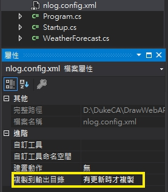

項目配置 建立方案及引用相關方案 1 2 3 4 5 6 7 8 9 dotnet new sln --name DrawWebAPI dotnet new webapi --name WebAPI --no-openapi dotnet new classlib --name Application dotnet new classlib --name Domain dotnet new classlib --name Infrastructure dotnet sln add .\WebAPI\WebAPI.csproj .\Application\Application.csproj .\Domain\Domain.csproj .\Infrastructure\Infrastructure.csproj dotnet add Application/Application.csproj reference Domain/Domain.csproj dotnet add WebAPI/WebAPI.csproj reference Application/Application.csproj dotnet add WebAPI/WebAPI.csproj reference Infrastructure\Infrastructure.csproj
建立程式中間層 由於較大的應用程序可能包含許多不同的內容服務，我們最終會在代碼中產生很多混亂且無法讀取的代碼ConfigureServices方法。
Application專案設定 安裝套件 1 2 3 4 5 6 7 8 9 10 11 12 13 14 15 16 17 18 19 (Visual Studio Install) Install-Package AutoMapper.Extensions.Microsoft.DependencyInjection Install-Package Microsoft.EntityFrameworkCore Install-Package Microsoft.AspNetCore Install-Package NLog.Extensions.Logging Install-Package Swashbuckle.AspNetCore Install-Package FluentValidation Install-Package FluentValidation.DependencyInjectionExtensions Install-Package MediatR.Extensions.Microsoft.DependencyInjection ------------------------------------------------------------------- (.Net Core CLI Install) dotnet add Application/Application.csproj package AutoMapper.Extensions.Microsoft.DependencyInjection dotnet add Application/Application.csproj package Microsoft.EntityFrameworkCore dotnet add Application/Application.csproj package Microsoft.AspNetCore dotnet add Application/Application.csproj package NLog.Extensions.Logging dotnet add Application/Application.csproj package Swashbuckle.AspNetCore dotnet add Application/Application.csproj package FluentValidation dotnet add Application/Application.csproj package FluentValidation.DependencyInjectionExtensions dotnet add Application/Application.csproj package MediatR.Extensions.Microsoft.DependencyInjection
ServiceExtensions 設定 在Application專案下創建一個名為 ServiceExtensions 靜態新類別。
1 2 3 4 5 6 7 8 9 10 11 using Microsoft.AspNetCore.Builder;using Microsoft.Extensions.DependencyInjection;public static class ServiceExtensions { public static void AddApplicationLayer (this IServiceCollection services } public static void UseApplicationLayer (this IApplicationBuilder app } }
在 Startup.cs 新增
1 2 3 4 5 6 7 8 9 10 11 12 13 14 15 16 17 18 19 20 21 22 23 using Application;public void ConfigureServices (IServiceCollection services ) services.AddApplicationLayer(); <----新增這列 services.AddControllers(); } public void Configure (IApplicationBuilder app, IWebHostEnvironment env ) if (env.IsDevelopment()) { app.UseDeveloperExceptionPage(); } app.UseHttpsRedirection(); app.UseStaticFiles(); app.UseRouting(); app.UseApplicationLayer(); <----新增這列 app.UseAuthorization(); app.UseEndpoints(endpoints => { endpoints.MapControllers(); }); }
Swagger 設定
Swashbuckle.AspNetCore.Swagger：Swagger 物件模型和中介軟體，用來公開 SwaggerDocument 物件作為 JSON 端點。
Swashbuckle.AspNetCore.SwaggerGen：Swagger 產生器，可直接從您的路由、控制器和模型建置 SwaggerDocument 物件。 它通常會結合 Swagger 端點中介軟體，以便自動公開 Swagger JSON。
Swashbuckle.AspNetCore.SwaggerUI：Swagger UI 工具的內嵌版本。 它可以解譯 Swagger JSON，建置豐富、可自訂的 Web API 功能描述體驗。 其中包括公用方法的內建測試載入器。Swashbuckle.AspNetCore 套件安裝 1 Install-Package Swashbuckle.AspNetCore
創建 Swagger 中介服務 在 Application 專案下,創建 Swagger 文件夾,並在Swagger目錄下新增 SwaggerExtension 類別1 2 3 4 5 6 7 8 9 10 11 12 13 14 15 16 17 18 19 20 using Microsoft.AspNetCore.Builder;using Microsoft.Extensions.DependencyInjection;using Microsoft.OpenApi.Models;public static class SwaggerExtension { public static void ConfigureSwagger (this IServiceCollection services services.AddSwaggerGen(s => { s.SwaggerDoc("v1" , new OpenApiInfo { Title = "DrawWeb API" , Version = "v1" }); }); public static void UseSwaggerExtension (this IApplicationBuilder app app.UseSwagger(); app.UseSwaggerUI(c => { c.SwaggerEndpoint("/swagger/v1/swagger.json" , "DrawWeb API" ); }); } }
將服務新增到 ServiceExtensions 1 2 3 4 5 using Application.Swagger;public static void AddApplicationLayer (this IServiceCollection services services.ConfigureSwagger(); <---新增這列 }
修改 Startup.cs 1 2 3 4 5 6 7 8 9 10 11 12 13 14 15 16 17 18 19 20 21 22 23 public void ConfigureServices (IServiceCollection services ) services.AddApplicationLayer(); services.AddControllers(); } public void Configure (IApplicationBuilder app, IWebHostEnvironment env ) if (env.IsDevelopment()) { app.UseDeveloperExceptionPage(); app.UseSwaggerExtension(); <---新增這列 } app.UseHttpsRedirection(); app.UseApplicationLayer(); app.UseRouting(); app.UseAuthorization(); app.UseEndpoints(endpoints => { endpoints.MapControllers(); }); }
修改 launchSettings.json 1 2 3 4 5 6 7 8 9 10 11 12 13 14 15 16 17 18 19 20 21 22 23 24 25 26 27 28 29 30 31 { "$schema": "http://json.schemastore.org/launchsettings.json", "iisSettings": { "windowsAuthentication": false, "anonymousAuthentication": true, "iisExpress": { "applicationUrl": "http://localhost:62141", "sslPort": 44334 } }, "profiles": { "IIS Express": { "commandName": "IISExpress", "launchBrowser": true, "launchUrl": "swagger", <---修改為swagger "environmentVariables": { "ASPNETCORE_ENVIRONMENT": "Development" } }, "qq": { "commandName": "Project", "dotnetRunMessages": "true", "launchBrowser": true, "launchUrl": "swagger", <---修改為swagger "applicationUrl": "https://localhost:5001;http://localhost:5000", "environmentVariables": { "ASPNETCORE_ENVIRONMENT": "Development" } } } }
測試 Swagger
CORS 設定 在 Application 專案下,創建CORS文件夾,並在CORS目錄下新增 CORSExtension 類別
1 2 3 4 5 6 7 8 9 10 11 12 13 14 15 16 17 18 using Microsoft.AspNetCore.Builder;using Microsoft.Extensions.DependencyInjection;public static class CORSExtension { public static void ConfigureCORS (this IServiceCollection services services.AddCors(options => { options.AddPolicy("CorsPolicy" , builder => builder.AllowAnyOrigin() .AllowAnyMethod() .AllowAnyHeader()); }); public static void UseCorsExtension (this IApplicationBuilder app app.UseCors("CorsPolicy" ); } }
在 Extensions文件夾下的 ServiceExtensions 新增
1 2 3 4 5 6 7 8 9 10 11 12 13 14 using Application.Cors;public static class ServiceExtensions { public static void AddApplicationLayer (this IServiceCollection services services.ConfigureSwagger(); services.ConfigureCORS(); <----新增 } public static void UseApplicationLayer (this IApplicationBuilder app app.UseCorsExtension(); <----新增 } }
NLOG 設定 NLog.Extensions.Logging 套件安裝 1 Install-Package NLog.Extensions.Logging
建立 nlog.config XML檔格式 並放在啟動專案下的根目錄 1 2 3 4 5 6 7 8 9 10 11 12 13 14 15 <?xml version="1.0" encoding="utf-8" ?> <nlog xmlns ="http://www.nlog-project.org/schemas/NLog.xsd" xmlns:xsi ="http://www.w3.org/2001/XMLSchema-instance" autoReload ="true" internalLogLevel ="Trace" internalLogFile ="d:\logs\internallog.txt" > <targets > <target name ="logfile" xsi:type ="File" fileName ="d:\logs\${shortdate}_logfile.txt" layout ="${longdate} ${level:uppercase=true} ${message}" /> </targets > <rules > <logger name ="*" minlevel ="Debug" writeTo ="logfile" /> </rules > </nlog >
啟動複製到bin 目錄 
建立 ILoggerManager 介面 我們的記錄器服務將包括四種記錄消息的方法
Info messages
Warning messages
Debug messages
Error message
在Application專案下創建Nlog文件夾,並在Nlog目錄下新增 ILoggerManager 介面類別
1 2 3 4 5 6 7 public interface ILoggerManager { void LogInfo (string message void LogWarn (string message void LogDebug (string message void LogError (string message }
實現ILoggerManager定義的接口 Nlog目錄下新增 LoggerManager 類別
1 2 3 4 5 6 7 8 9 10 11 12 13 14 15 16 17 18 19 20 21 22 23 using NLog;public class LoggerManager : ILoggerManager { private static ILogger logger = LogManager.GetCurrentClassLogger(); public void LogDebug (string message logger.Debug(message); } public void LogError (string message logger.Error(message); } public void LogInfo (string message logger.Info(message); } public void LogWarn (string message logger.Warn(message); } }
創建 NlogExtension 1 2 3 4 5 6 using Microsoft.Extensions.DependencyInjection;public static class NlogExtension { public static void ConfigureNlog (this IServiceCollection services services.AddScoped<ILoggerManager, LoggerManager>(); }
將服務新增到 ServiceExtensions 1 2 3 4 5 6 7 using Application.Nlog;public static void AddApplicationLayer (this IServiceCollection services services.ConfigureSwagger(); services.ConfigureCORS(); services.ConfigureNlog(); <----新增 }
測試Nlog 修改 WeatherForecastController.class
1 2 3 4 5 6 7 8 9 10 11 12 13 14 15 16 17 18 19 20 [ApiController ] [Route("[controller]" ) ] public class WeatherForecastController : ControllerBase { private ILoggerManager _logger; public WeatherForecastController (ILoggerManager logger ) _logger = logger; } [HttpGet ] public IEnumerable<string > Get ( _logger.LogInfo("Here is info message from our values controller." ); _logger.LogDebug("Here is debug message from our values controller." ); _logger.LogWarn("Here is warn message from our values controller." ); _logger.LogError("Here is an error message from our values controller." ); return new string [] { "value1" , "value2" }; } }
正確無誤的話在 D:\Log 目錄下,Nlog-all-yyyy-dd-mm
1 2 3 4 2020-11-16 03:04:04.8098 INFO Here is info message from our values controller. 2020-11-16 03:04:04.8748 DEBUG Here is debug message from our values controller. 2020-11-16 03:04:04.8892 WARN Here is warn message from our values controller. 2020-11-16 03:04:04.8892 ERROR Here is an error message from our values controller.
AutoMapper 設定 AutoMapper 套件安裝 1 Install-Package AutoMapper.Extensions.Microsoft.DependencyInjection
AutoMapper 輔助程序 為AutoMapper添加了輔助程序，這將有助於保持我們的代碼整潔並位於適當的位置（用於重新綁定模型），以便日後進行維護時更加容易。
AutoMapper/IMapFrom.cs 1 2 3 4 5 using AutoMapper;public interface IMapFrom <T >{ void Mapping (Profile profile )typeof (T), GetType()); }
AutoMapper/MappingProfile.cs 1 2 3 4 5 6 7 8 9 10 11 12 13 14 15 16 17 18 19 20 21 22 23 24 using System;using System.Linq;using System.Reflection;using AutoMapper;public class MappingProfile : Profile { public MappingProfile ( ApplyMappingsFromAssembly(Assembly.GetExecutingAssembly()); } private void ApplyMappingsFromAssembly (Assembly assembly ) var types = assembly.GetExportedTypes() .Where(t => t.GetInterfaces().Any(i => i.IsGenericType && i.GetGenericTypeDefinition() == typeof (IMapFrom<>))) .ToList(); foreach (var type in types) { var instance = Activator.CreateInstance(type); var methodInfo = type.GetMethod("Mapping" ); methodInfo?.Invoke(instance, new object [] { this }); } } }
範例 1 2 3 4 5 6 7 8 9 10 11 12 13 14 15 16 17 18 19 20 21 22 23 24 public class GetAllPostsResponse { [JsonPropertyName("id" ) ] public int Id { get ; set ; } [JsonPropertyName("title" ) ] public string Title { get ; set ; } [JsonPropertyName("body" ) ] public string Body { get ; set ; } [JsonPropertyName("userId" ) ] public int UserId { get ; set ; } } public class GetAllPostsDto : IMapFrom <GetAllPostsResponse >{ public int UserId { get ; set ; } public int Id { get ; set ; } public string Title { get ; set ; } public string Body { get ; set ; } public void Mapping (Profile profile ) profile.CreateMap<GetAllPostsResponse, GetAllPostsDto>(); } }
將服務新增到 ServiceExtensions 1 2 3 4 5 6 7 8 9 using AutoMapper;using System.Reflection;public static void AddApplicationLayer (this IServiceCollection services services.ConfigureSwagger(); services.ConfigureCORS(); services.ConfigureNlog(); services.AddAutoMapper(Assembly.GetExecutingAssembly()); <---新增這列 }
FluentValidation 設定 FluentValidation 套件安裝 1 2 Install-Package FluentValidation Install-Package FluentValidation.DependencyInjectionExtensions
將服務新增到 ServiceExtensions 1 2 3 4 5 6 7 8 9 using FluentValidation;public static void AddApplicationLayer (this IServiceCollection services services.ConfigureSwagger(); services.ConfigureCORS(); services.ConfigureNlog(); services.AddAutoMapper(Assembly.GetExecutingAssembly()); services.AddValidatorsFromAssembly(Assembly.GetExecutingAssembly()); <---新增這列 }
1 Install-Package MediatR.Extensions.Microsoft.DependencyInjection
將服務新增到 ServiceExtensions 1 2 3 4 5 6 7 8 9 10 using MediatR;public static void AddApplicationLayer (this IServiceCollection services services.ConfigureSwagger(); services.ConfigureCORS(); services.ConfigureNlog(); services.AddAutoMapper(Assembly.GetExecutingAssembly()); services.AddValidatorsFromAssembly(Assembly.GetExecutingAssembly()); services.AddMediatR(Assembly.GetExecutingAssembly()); <---新增這列 }
1 2 3 4 5 6 7 8 9 10 11 using MediatR;using Microsoft.AspNetCore.Mvc;using Microsoft.Extensions.DependencyInjection;[ApiController ] [Route("api/[controller]" ) ] public abstract class ApiController : ControllerBase { private IMediator _mediator; protected IMediator Mediator => _mediator ??= HttpContext.RequestServices.GetService<IMediator>(); }
ApiController 是使用C＃8的新功能創建的，因此我們遵循DRY原理，並保持控制器盡可能清潔。
數據庫模型和存儲庫模式 我們將使用 Code First 來執行資料存取的應用程式。所以，我們要了解如何創建實體（model class），如何使用DbContext類，以及如何使用遷移來轉移我們創建的數據庫模型到真實數據庫。為此，我們將創建一個Repository模式作為數據訪問層。
創建模型 技巧提示 C# 變數型態後加問號,表示除了原有的型別資料外,也可以儲存NULL
創建模型 技巧提示 C# 變數型態後加問號,表示除了原有的型別資料外,也可以儲存NULL